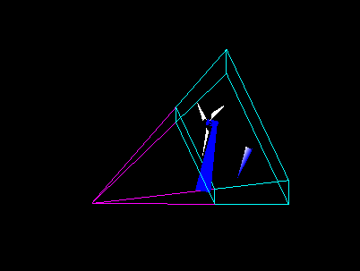
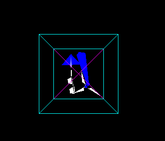
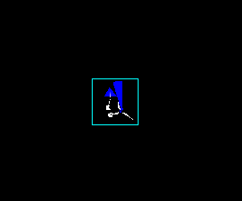
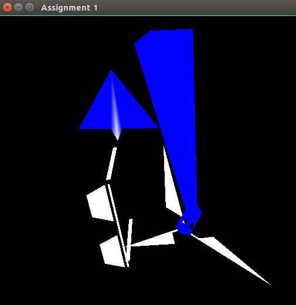

Graphics Assignment 2
Sashank Gondala
Sai Charan
- Implemented all the required features
- The 3 models we selected are Spectacles, Windmill and a paper plane
- The click-modelling provides an option to rotate, translate even in the inspection mode
- This enables the user to interactively add points while moving (/around) the object during modelling
- The user will also have an option to merge the point clicked, to be an independent point or merge them to nearest point in the x-y viewing plane



